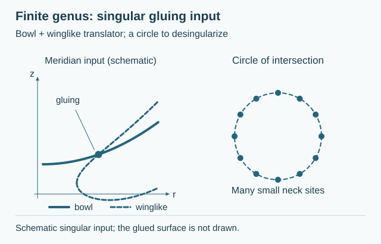
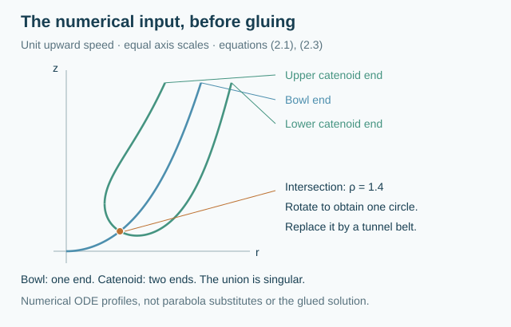

§ 3.10 Finite-genus translators with three ends8609A35E7601
8609A35E760185D3C19BE7E6
Dávila–del Pino–Nguyen construct complete embedded orientable translating surfaces in $\mathbb R^3$ with finite topology and large genus. The construction desingularizes an intersecting bowl translator and translating catenoid. It is a gluing construction, not an explicit formula.
The examples have three asymptotically paraboloidal ends. They are noncompact; their translation gives an eternal flow.
The high-genus connecting region replaces a circle of intersection of the model surfaces by a Scherk-like arrangement of small tunnels.
The genus restriction is part of the construction: this statement does not supply examples of every prescribed small genus or a uniqueness theorem.
The supplied notes [HIMWNotes19], Section 4, PDF page 11, describe the gluing configuration and the large-genus restriction. The original paper [DPN17], Theorem 1.1, Figure 2, and Section 2, supplies the construction. The illustration separates the numerically integrated bowl–catenoid input from a connected schematic of the tunnel belt. The latter is not a numerical solution of the translator equation. Its period counts are illustrative, and no unproved stability or entropy value is assigned.

Drag to rotate. Use the zoom buttons, or focus the drawing and use arrow keys and + / −.
Construction schematic. Three upward ends joined through a Scherk-like tunnel belt, following Dávila–del Pino–Nguyen, Theorem 1.1 and Section 2. Rotate, zoom, inspect the cutaway or tunnel detail, and compare the numerical bowl–catenoid input. The connected model is illustrative; it has not been corrected to solve the translator equation. The displayed period counts do not assert existence at those genera. Open drawing

Numerical ODE input. Meridians integrated from the unit-speed rotational translator equations (2.1) and (2.3). The bowl meets the lower wing of the translating catenoid at radius 1.4; revolving this point gives the circle to be desingularized. The height cutoff is artificial. Open drawingAmbient space, topology, embeddedness and entropyOrientable surface with three ends · Euclidean space ℝ³ · Embedded
Ambient space
Euclidean space ℝ³
Topology
Orientable surface with three ends
Embeddedness
Embedded: The constructed finite-genus translators are embedded; the intersecting bowl and translating catenoid are construction inputs.
[HIMWNotes19] David Hoffman, Tom Ilmanen, Francisco Martín, and Brian White.
Notes on translating solitons for mean curvature flow.
2019.
Supplied 20-page manuscript dated January 29, 2019; catalogue citations use its PDF page numbers, not the later published edition.
URL: https://arxiv.org/abs/1901.09101.All uses in this project↩ 1
[DPN17] Juan Dávila, Manuel del Pino, and Xuan Hien Nguyen.
Finite topology self-translating surfaces for the mean curvature flow in R3.
Advances in Mathematics, 320:674–729, 2017.
Theorem 1.1, Figure 2, and Section 2 checked in the accepted manuscript for the bowl–catenoid and Scherk gluing illustrations.
URL: https://arxiv.org/abs/1501.03867, doi:10.1016/j.aim.2017.09.014.All uses in this project↩ 1


Comments
Comments are not enabled yet.